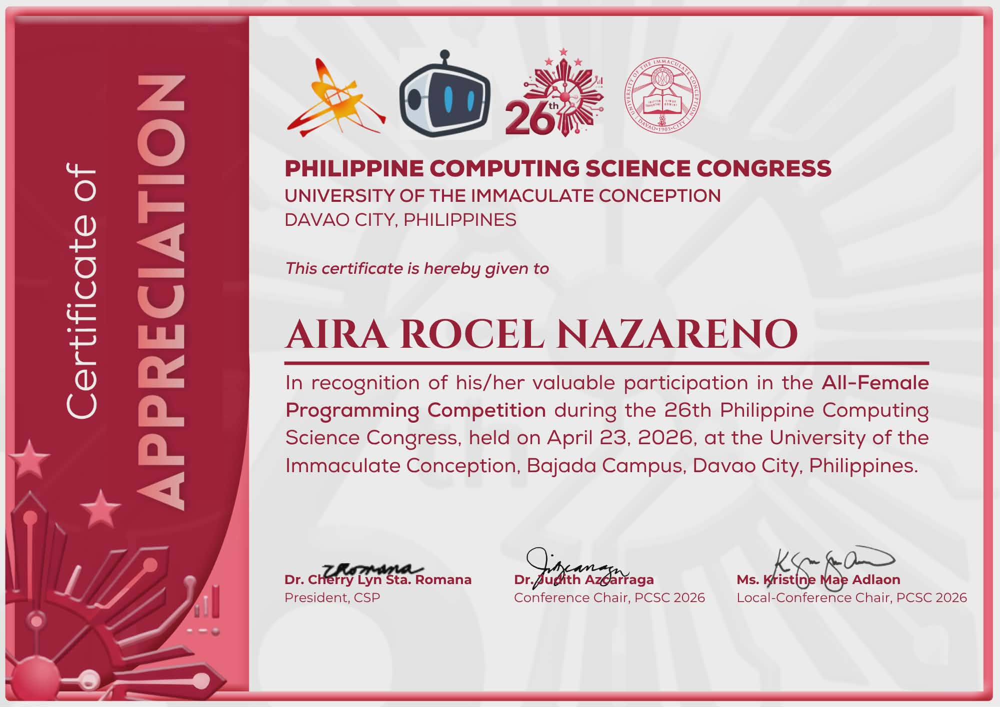

2nd Year Student · BS Information Technology
Davao del Norte State College
I am an Information Technology student who enjoys learning about backend development, database management, and building systems that solve real-world problems. I am always eager to expand my technical skills and explore new technologies.
Outside of academics, I enjoy playing online games, which has helped me develop problem-solving, teamwork, and strategic thinking skills.
Currently in 2nd year of a Bachelor of Science in Information Technology program. Consistent Dean's Lister across three semesters.
Participated in the All-Female Programming Competition during the 26th Philippine Computing Science Congress held at the University of the Immaculate Conception, Bajada Campus, Davao City.
2nd Place
A desktop-based system designed to record student attendance and monitor fines incurred due to absences, tardiness, or other violations. Helps organizations and instructors efficiently track records and automatically calculate penalties.
Role: Prepared documentation and system analysis; planned the system workflow and defined how attendance records and fines would be processed.
A management system for corn farmers and cooperatives in Panabo City to manage crop inventories, transactions, orders, and member information — improving operational efficiency and communication.
Role: Developed backend functionalities; designed and implemented the database structure; assisted in UI design; implemented inventory, order management, and user authentication features.
A static educational website promoting awareness of marine conservation and supporting UN SDG 14: Life Below Water. Provides information on marine ecosystems, environmental challenges, and conservation efforts.
Role: Developed the front-end interface; designed page layouts and navigation; created responsive and visually appealing web pages; organized marine conservation content.
A web-based vessel tracking system to improve maritime safety and navigation. Enables monitoring of vessel information and locations, supporting SDG 14 by promoting safer, more sustainable marine activities.
Role: Developed backend functionalities; designed and managed database operations; implemented data processing and system logic; assisted in integrating backend services with the frontend.
A desktop-based decision-support system that optimizes allocation of relief goods during disaster response using the 0/1 Knapsack Algorithm — maximizing the value and effectiveness of aid delivery within a limited carrying capacity.
Role: Developed backend logic; implemented the 0/1 Knapsack Algorithm; assisted in database integration and system testing; contributed to interface design.
Awarded for valuable participation in the All-Female Programming Competition, achieving 2nd place at the 26th Philippine Computing Science Congress hosted by the University of the Immaculate Conception.